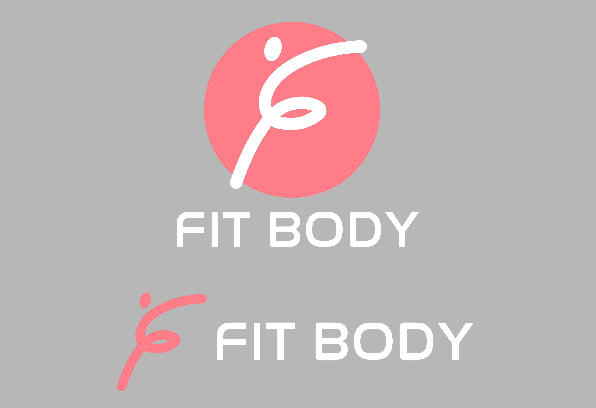

ロゴデザイン

架空のパーソナルトレーニングジム「FIT BODY」」のLPのデザイン制作を行いました。女性専用のジムという設定のため、 色はピンクをメインにし、補色のグリーンを取り入れ見やすいカラーを選びました。全体的に興味や信頼を与えること ができるよう構成を考え、体験に申し込んでもらう目的のLPのため、体験のキャンペーン部分を複数配置しました。
使用ソフト・言語
Photoshop
使用フォント
overpass、Noto Sans JP